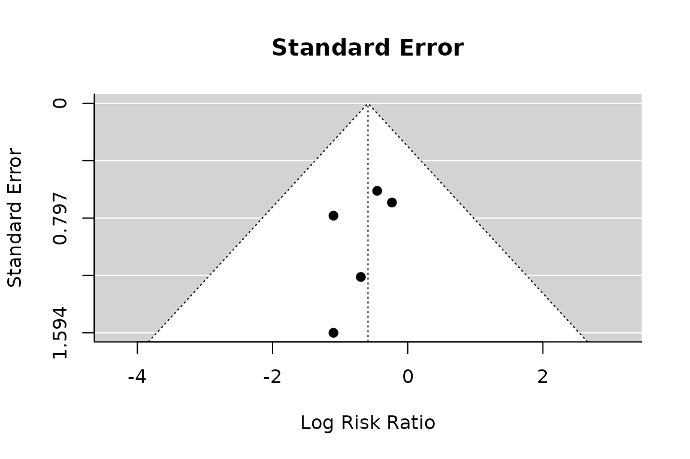

Meta-Analysis on Postoperative Atelectasis
dcv-atelectasis.RmdPrimary analysis: Paul-Mandel without Hartung-Knapp-Sidik-Jonkman (HKSJ) modification
pm.atelectasis <- rma(yi, vi, data=dat.atelectasis, method="PM")
forest(pm.atelectasis,
atransf=exp,
at=log(c(0.01, 0.1, 0.5, 1, 4, 10)))These results agree with the paper (Fig 2, bottom).
Sensitivity analysis
Sensitivity analysis 1: FE model
fe.atelectasis <- rma(yi, vi, data=dat.atelectasis, method="FE")
forest(fe.atelectasis,
atransf=exp,
at=log(c(0.01, 0.1, 0.5, 1, 4, 10)))
Note: The standard RE model without HKSJ modification is identical (not shown):
re.atelectasis <- rma(yi, vi, data=dat.atelectasis, method="REML") Sensitivity analysis 3: Odds ratios (Paule-Mandel without HKSJ modification)
dat.atelectasis.OR <- escalc(measure="OR",
ai=c(3, 2, 1, 1, 0),
bi=c(15, 33, 43, 44, 15),
ci=c(4, 6, 4, 2, 1),
di=c(15, 29, 38, 43, 14),
slab=c("Boules et al, 2011",
"Mahmoud et al, 2017",
"Li et al (Standard), 2020",
"Li et al (OLA), 2020",
"Ammar et al, 2021")
)
pm.OR.atelectasis <- rma(yi, vi, data=dat.atelectasis.OR, method="PM")
forest(pm.OR.atelectasis,
atransf=exp,
at=log(c(0.01, 0.1, 0.5, 1, 4, 10)))
Results are similar to primary analysis results.
Atelectasis
leave1.atel <- leave1out(pm.atelectasis)
forest.default(x=leave1.atel$estimate, ci.lb=leave1.atel$ci.lb, ci.ub=leave1.atel$ci.ub,
slab=paste("Omitting ", leave1.atel$slab, sep=""),atransf=exp,
at=log(c(0.15, 0.25, exp(pm.atelectasis$b), 1, 4)), xlim=log(c(0.01, 4.5)),
refline=pm.atelectasis$b
)
lines(x=log(c(1, 1)), y=c(0, 6))
Results are almost identical to results in paper (difference of 0.01 in the upper confidence interval for Mahmoud et al.).
Funnel plot
funnel(pm.atelectasis, main="Standard Error")
regtest(pm.atelectasis)
#>
#> Regression Test for Funnel Plot Asymmetry
#>
#> Model: mixed-effects meta-regression model
#> Predictor: standard error
#>
#> Test for Funnel Plot Asymmetry: z = -0.5600, p = 0.5755
#> Limit Estimate (as sei -> 0): b = 0.0184 (CI: -2.8837, 2.9205)